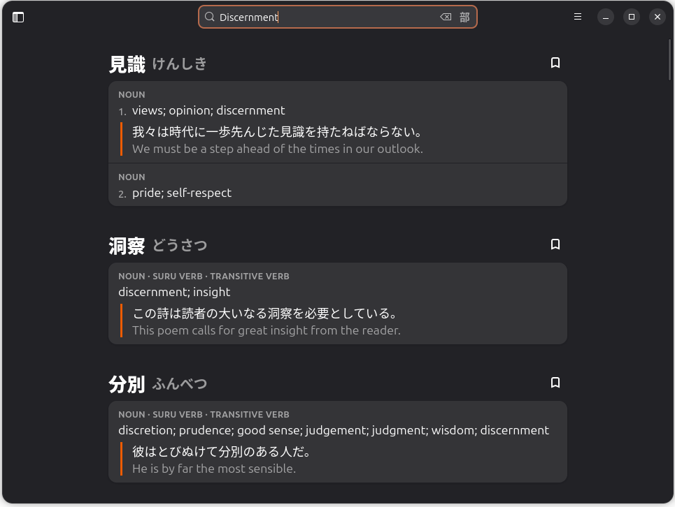

AI を教師役にしてはいけないらしい

今回は Cory Doctorow さんの記事からはじめよう。
- Pluralistic: Discernment (28 Jul 2026) – Pluralistic: Daily links from Cory Doctorow
- 見識 » p2ptk[.]org (邦訳版)
ちなみに “discernment” を Kotoba で引いたら以下が出た。


via
Kotoba
いきなり引用しておこうか。
ある主題を本当によく理解していれば――有用なボット出力と問題のある出力を見分けられるほどに理解していれば――ボットは役に立ちうる。ときにはきわめて有用に、たいていは並程度に有用に。
[…]
繰り返すが、チャットボットから有用な仕事を引き出すなら、見識こそがすべてである。
見識より
生産的なAI利用にとって見識が中心的な役割を果たすことは自明である。だからこそ私には、AIをティーチングアシスタントとして――最悪なのは教師として――活用できるのだという主張が、そら恐ろしいほど不可解に思える。
見識より
AIは普通のテクノロジーに過ぎない。つまり、役に立つ場面もあれば、無意味な場面や大いに有害な場面もあるということだ。チャットボットに関する経験則の一つは、LLMが必ず吐き出す欠陥のある出力を無視できる見識を備えた専門家に対してのみ、有用な情報を提供しうる、というものである。
見識より
言う言う（笑）
「教師」がピンとこないなら「メンター」とか「カウンセラー」とかで置き換えて想像してみると分かりやすいかもしれない。 私はプログラマなのでそちらの比喩で考えるなら LLM は上級プログラマというよりは IT 土方って感じだろうか。 ゼロ年代に流行ったなぁ「IT 土方」ってワード。 泥臭いテストコードも文句言わずに書いてくれるので助かっている。
でも，機械（ソフトウェア）だからチューニングはできるが（自ら）成長はしない。
そういえば某通信会社が AI に自社システムを診断させたところ，15K件の脆弱性が見つかったので頑張って潰したのだが，その後，最新モデルで再チェックしたら更に35K件の脆弱性が見つかって orz な感じらしい。
多分，その35K件を潰し終わる頃には新しいモデルが出るよ，知らんけど。
もう完全にモグラ叩き状態（笑）
余談はさておき，問題はどうやってその「見識（discernment）」を身に付けるかである。 既に AI という道具がある状況で「私たちの世代を見習え」とは到底言えない。 でも何らかの形で「学び」は必要なんだよ。
定義上、学生は自らが学んでいる主題の専門家ではない。だからこそ学んでいるのだ。知識を、ひいては見識を身につけるために学んでいる。チャットボットの説明を通じて学べと学生に求めるのは、道理に合わないどころか危険ですらある。
見識より
見識って難しいよな。 単なる知識じゃないもん。